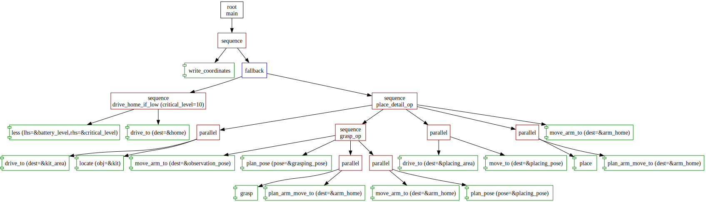

Forester
Forester represents a framework that provides the set of tools to perform the effective orchestration of the set of tasks.
The tasks can be performed synchronously or asynchronously, locally or remotely.
Forester takes care of the correct performance and distribution of the tasks.
the main concept of the framework
is the flow based on the behavior trees
it can be effectively used in the game, ai, robotic areas, or anywhere where the workflow engine can be applied.
Why Forester
The main idea and the target of Forester is to make the process of chaining a complex logic
of the different tasks together effective and easy.
The following set of features is summoned to highlight the framework among the others.
The dsl to describe the logic
One of the problems that Forester endeavours to solve is to isolate the logic of the orchestration \
from the logic of the tasks implementations and therefore the dsl ('Tree') is provided.
The Dsl is script based and supports a number of features that can alleviate the writing of the big trees.
The framework provides the ability to create async and sync tasks
The tasks (leaves of the tree) can be fulfilled with the asynchronous and synchronous logic. The difference here is the async tasks will not block the tree while sync tasks will block the tree.
The framework provides the ability to create remote and local tasks (TBD)
The tasks can represent as a local stateless/stateful blocks of logic as the remote servers or procedures.
The tooling to visualize and trace the execution of the tree
The tree can be visualized and traced in order to see how it is supposed to be executed.
The simulation mode is supposed to aid with the design decisions
The special simulation mode aims to help, quickly to see how the tree will be unfolding and how it can be designed.
The optimizations and analysis of the tree (TBD)
The language provides a set of optimizations and validations to either ensure the logic is correct
or perform some validations on it.
The validations engine allows the users to create the manually defined validations (TBD)
The user-defined validations can be useful to restrict some features of the framework.
Integrations (TBD)
Why behavior trees
Firstly, they provide a strong math abstraction over the orchestration logic
and enables to separate the business logic and the tree logic itself.
On the other hand, they have only a small set of logically conjucted components making the design easier,
Articles that introduce into the basics of the behaviour trees
- Chris Simpson’s Behavior trees for AI: How they work
- Introduction to behavior trees
- State Machines vs Behavior Trees
Useful libraries
- BehaviorTree.CPP : the brilliant library provides the implementation on CPP.
- Beehave : behavior tree AI for Godot Engine.
- Bonsai : the great library for behavior trees in rust.
Components
All in all, the framework provides the following components :
- Analysis
- Visualization
- Tracing
- Simulatioon
- Language as an entry point
- Runtime
- Console utility and extention
Scripts
That section describes the language and a way how the users can describe the logic of the trees:
Tree lang
The scripts. They are usually can be stored as a folder with one or more root node which will be executed afterwords.
The syntax of the language takes a vast part of the book and described in the following chapter
Validations and Optimizations
These parts come with static analyzer and are conducted when the users compile the scripts into the runtime tree. They are described in the corresponding sections Validations and Optimizations
Tools
There are some number of extensions for ides to alleviate the writing scripts and running the trees. The detailed description is in the chapter Tools
Runtime
That is the central part of the framework. The runtime orchestrates the tree execution alongside
with the storing and manipulating some data and actions.
Engine
The main orchestrator. It is described in the chapter Engine
Blackboard
The component which is responsible for the storing the intermediate data that can be passing across the tree. The mechanism of working is described in that chapter
ActionKeeper
The component stores and processes the user implemented actions (tasks or conditions). The chapter Action describes how to interact with ActionKeeper.
Analysis
This component helps to analyse the trees and also interacts with them in an easy way
Visualization
The users can visualize the tree using graphviz format. This section explains how to do that.
Tracing
The users can turn on some extra logging that can float up some extra meta information \ helpful to design and debug the trees. This page explains how to handle the tracing.
Simulation
The users can run the tree with some stubs instead of the real implementations of the actions. \ It can help swiftly define and correct the behavior of the tree itself. This chapter describes it.
Setup
There are two ways to interact with Forester
Using console utility for simulation and visualization
The console utility f-tree can be installed using cargo
cargo install f-tree
and then be used with
~ f-tree
A console utility to interact with Forester
Usage: f-tree <COMMAND>
Commands:
sim Runs simulation. Expects a simulation profile
vis Runs visualization. Output is in svg format.
help Print this message or the help of the given subcommand(s)
Options:
-h, --help Print help
-V, --version Print version
As a dependency to run from a rust code
forester-rs = "*"
From file system
use std::path::PathBuf; use forester_rs::flow; use forester_rs::tracer::Tracer; use forester_rs::runtime::builder::ForesterBuilder; use forester_rs::runtime::action::Action; use forester_rs::runtime::action::builtin::data::StoreData; fn main() { let mut fb = ForesterBuilder::from_file_system(); fb.main_file("main.tree".to_string()); fb.root(root); fb.register_action("store", Action::sync(StoreData)); fb.tracer(Tracer::default()); fb.bb_load("db/db.json".to_string()); let forester = fb.build().unwrap(); let result = forester.run().unwrap(); println!("result {:?}",result); }
On the fly for small scripts
use std::path::PathBuf; use forester_rs::flow; use forester_rs::tracer::Tracer; use forester_rs::runtime::builder::ForesterBuilder; use forester_rs::runtime::action::Action; use forester_rs::runtime::action::builtin::data::StoreData; fn main() { let mut fb = ForesterBuilder::from_text(); fb.register_action("cv",Action::sync(ReturnResult::success())); fb.text(r#" root main sequence { cv() cv() cv() } "#.to_string()); let mut forester = fb.build().unwrap(); let result = forester.run().unwrap(); println!("result {:?}",result); }
Manually construct the trees
use std::path::PathBuf; use forester_rs::flow; use forester_rs::tracer::Tracer; use forester_rs::runtime::builder::ForesterBuilder; use forester_rs::runtime::action::Action; use forester_rs::runtime::action::builtin::data::StoreData; fn main() { let mut fb = ForesterBuilder::from_code(); fb.register_action("cv",Action::sync(ReturnResult::success())); fb.add_rt_node( flow!(fallback node_name!(), args!(); action!(), action!(), action!(), action!() ) ); let mut forester = fb.build().unwrap(); let result = forester.run().unwrap(); println!("result {:?}",result); }
Tree language
The tree language is a frontend for the framework itself.
Generally, the language is a simple dsl encompassing the basic abstractions
and enabling to create of the building block upon the abstractions
Why the language is needed
The basic idea behind the language is an attempt to provide a set of generalizations
which will alleviate the redundancy in some cases.
- The language allows creating the tree definitions accepting other trees as parameters (higher order trees)
- The language provides lambda definitions
The syntax of the language is very simple and is described in this chapter.
Structure of the project
The scripts are supposed to be in the folder which is marked as root directory.
All imports start from the root and represent a path relating to the root directory:
- project_folder
- main.tree
- gripper.tree
- cv.tree
- utility
- utility.tree
- helpers.tree
The project should have at least one root tree definition. If the project has several,
the one that is supposed to run needs to be pointed out to.
File extension
The files have the extension tree.
Syntax
The syntax of the tree language is similar to any average scripting language namely it consists of:
- tree definitions: subtree that defines a prat of the complete tree.
- tree invocations: the calls of the tree definitions.
- imports: the instructions that enable import from the other files.
- parameters and arguments: that allow passing the values and the other tree to the tree definitions.
- lambda: the ability to define the anonymous tree definitions and invoke it at the same time.
- comments: the extra information.
Below, a simple example that shows the aforementioned points
import "nested/impls.tree"
import "nested/impls.tree" {
grasp => grasp_ball,
}
root place_ball_to_target fallback {
place_to(
obj = {"x":1 },
operation = place([10]),
)
retry(5) ask_for_help()
}
sequence place_to(what:object, operation:tree){
fallback {
is_approachable(what)
do_job(approach(what))
}
fallback {
is_graspable(what)
do_job(approach(what))
}
sequence {
savepoint()
operation(..)
}
}
sequence place(where:array){
is_valid_place(where)
do_job(slowly_drop({"cord":1}))
}
sequence do_job(action:tree){
savepoint()
info_wrapper(action(..))
savepoint()
}
sequence info_wrapper(action:tree){
log("before action")
action(..)
log("before action")
}
impl log(text:string);
Imports
The code of the trees can be organized as a project, breaking down the tree definitions into different files. It enables the project to be organized logically avoiding redundancy.
Therefore, the imports can appear in the file anywhere but are mostly grouped at the top, forming a sort of header.
Syntax
The whole file
To import the whole file, the following syntax needs to be applied:
import "nested/impls.tree"
import "/usr/home/projects/impls.tree"
import "C:\projects\forester\tree\tests\plain_project\nested\impls.tree"
The definition with alias
import "nested/impls.tree" {
grasp => grasp_ball,
}
Import path
The path of the imports can be:
- absolute :
C:\plain_project\nested\impls.tree - relative :
nested/impls.tree
Absolute path
import "C:\projects\forester\tree\tests\plain_project\nested\impls.tree"
Relative path
The relative path relates to the root of the project, that is pointed out in the start. Typically, the structure is the following:
- project_folder
- main.tree // the file that has a root tree
- .. folders
- folder
- def.tree
- folder_nested
- another_nested
- file.tree
Here the import of the file.tree can be
import "folder_nested/another_nested/file.tree"
in any other file.
Aliases
To avoid the problem of ambiguous names when several tree definitions with the same name can be imported, the aliases can come to the rescue.
They allow renaming tree definition while imports:
import "/robot_specific_ops/cv.tree" // has a tree def cv
import "/common_ops/cv.tree" { // also has a tree def cv
cv => com_cv // to avoid ambiguity, we can rename it using an alias.
}
Tree definition
The tree definition denotes a part of the tree (so-called subtree) that defines an independent description and can
- have the input parameters and accept arguments including other trees definitions
- invoke other tree definitions and get invoked by others (except
root)
There are the following types of the definitions:
- Flow: the core part of the behavior tree framework. The nodes define a logic of processing the tree itself, navigating for the next step.
- Lambda: The anonymous definition of subtree with instant invocation at this place.
- Decorator: the atomic built-in tree definition that has one child and can enrich or transform the child result according to its type.
- Actions: the leaves of the tree bearing the business logic.
Flow tree definitions
The flow tree definitions describe the way how the tree will be traversed. There are 2 basic types which get broken down afterward:
- sequences: A Sequence performs every child as long as they are return
Success. If otherwise, the sequence instantly stops with thefailurestatus - fallbacks: A fallback performs children until the first
Success.
Combining the aforementioned flow trees, we can get any type of logic.
Sequence
A Sequence node ticks all underlying nodes as long as they return Success.
Otherwise, (when a child returns failure a sequence aborted)
In the language, the tree definitions and lambda invocations of this element are marked with the key word sequence.
impl store(key:string, value:string); // store a string value to a key in blackboard
root main {
sequence {
store("a","1") // first tick and proceed if succeded
store("b","2") // sec tick and proceed if succeded
store("c","3") // thrd tick and finish if succeded
}
}
with a graph representation
strict digraph {
1[label="root
main ",shape=rect,color=black]
1 -> 2
2[label="sequence",shape=rect,color=darkred]
2 -> 3
2 -> 4
2 -> 5
3[label="store (key=a,default=1)",shape=component,color=green]
4[label="store (key=b,default=2)",shape=component,color=green]
5[label="store (key=c,default=3)",shape=component,color=green]
}
Common behaviour
- When it gets the first
tickit switches to staterunning - When a child returns
successit proceeds to the next one and ticks it- if this is a final child, it returns
success
- if this is a final child, it returns
- If a child returns
running, the node returnsrunningas well - If a child returns
failure, the node returnsfailureas well - When a node is restarted, the process starts from the beginning
Intention
Often, it is used as a straight chain of instructions
// if the definition has only one child
// (root has only one child) '{''}' can be omitted
root main sequence {
validate_env()
perform_action()
finish_and_save()
}
Subtypes
There are 2 subtypes that bring a few subtleties to the common process
Memory Sequence
This sequence defines in the language with the keyword m_sequence and has the following peculiarity:
The sequence memorizes the children that are succeeded and skips them next time:
root main {
retry(5) m_sequence {
store("key",1) // returns success
perform_action() // returns failure
finish_and_save()
}
}
The node perform_action returns failure and the decorator retry restarts sequence.
The main difference with a sequence is an execution starts from the node perform_action skipping the nodestore.
Reactive Sequence
This sequence defines in the language with the keyword r_sequence and has the following peculiarity:
The sequence restarts all children if they return either failure or running:
root main {
m_sequence {
store("key",1) // returns success
perform_action() // returns running
finish_and_save()
}
}
The node perform_action returns running and the whole sequence returns running
but on the next tick it starts from the node store again.
Fallback
A Fallback ticks children sequentially until someone returns a Success.
Otherwise, if all children return Failure, the node returns Failure.
In the language, the tree definitions and lambda invocations of this element are marked with the key word fallback.
cond is_busy()
impl take_from_others()
root main {
fallback {
any_tasks() // goes farther if the first actions is failure
do_it()
}
}
Common behavior
- When it gets the first
tickit switches to staterunning - When a child returns
successit stops the execution and returnssuccess - If a child returns
running, the node returnsrunningas well - If a child returns
failure, the node proceeds to the next child- if this is a final child, it returns
failure
- if this is a final child, it returns
- When a node is restarted, the process starts from the beginning
Intention
Often, it is used for making conditions. The script below emulates a simple condition that needs to do before
cond can_take(sub:object)
impl move_to(sub:object)
impl take(sub:object)
root main sequence {
fallback {
can_take(item)
move_to(item)
}
take(item)
}
using a programming language, it could be the following:
fn main(item:String){ if !can_take(item) { move_to(item) } take(item) }
Subtypes
There is one subtype that brings a few subtleties to the common process
Reactive Fallback
This Fallback defines in the language with the keyword r_fallback and has the following peculiarity:
The fallback restarts all children on the next tick if someone returned running:
...
root main {
r_fallback {
needs_to_charge() // returns failure
action() // returns running
fin_and_save()
}
}
The node action returns running and the whole sequence returns running
but on the next tick it starts from the node needs_to_charge again.
Decorators
The decorators are the specific type of node, that transforms the result of its child. Every decorator has a specific keyword and set of parameters.
** Every decorator should have solely one child **
Inverter
The keyword is inverter.
The decorator inverts the result of the child.
Only the final results are inverted, for running the result will be
running as well
main root sequence {
inverter check_condition() // inverts the result
}
ForceSuccess
The keyword is force_success.
Always returns success regardless of the child response
ForceFail
The keyword is force_fail.
Always returns failure regardless of the child response
Repeat
The keyword is repeat
It repeats the child so the number of times according to the passing parameter
- count: the number of repetitions. 0 by default
// the job will be performed 0 times, therefore will not be invoked at all
root main_idle repeat {
job()
}
// the job will be performed 5 times
root main repeat(5) {
job()
}
Retry
The keyword is retry
If the child returns failure, the decorator tries to run it again.
The number of attempts is restricted by the given argument
- attempts: the number of attempts to retry. 0 by default
// 0 by default. will be failed as soon as at least one of the child gets failed
root main retry {
sequence {
job1()
job2()
}
}
// the decorator will try to repeat the sequence upt to 10 times if it returns failure
root main_with_retry retry(10) {
sequence {
job1()
job2()
}
}
Timeout
The keyword is timeout
The decorator tries to measure how long the child is running and shut id down if it exceeds the limit.
For now, it works only for asynchronous actions since the decorator measures time when the child returns running
- limit: the threshold in milliseconds. 1000 by default.
// if the squence works asynchonously (returns running)
// the timeout will count up the time of the first start
// and then recheck it every time when the child returns running
root main_with_retry timeout {
sequence {
job1()
job2()
}
}
Delay
The keyword is delay
The decorator delays the initial run of the child for the given as a parameter time.
- wait: the delay time in milliseconds. 0 by default.
// the delay is zero
root main delay job()
// the delay is 1 second
root main_d delay(1000) job()
Actions
The leaves of the tree are actions, which are the final point of the whole execution mechanism.
They are supposed to be implemented either using rust or other languages
and mix-in on the execution stage.
The actions have 2 keywords to mark:
implmeans some job or action that can take time and be asynchronouscondmeans some activity to check some conditions and immediately returns result
In practice, the engine does not see difference
in the language, they can be marked as an operation with empty or lacking implementation.
impl action1(a:string); // here the semicolon is required
impl action2(b:object){} // here, not
cond cond1(c:num);
cond cond2(d:array){}
Contract
The contract of the definition and invocation should coincide, otherwise the execution will throw an exception
impl action(c:num)
root main action() // the exception will be raised since the argument is uncovered.
Built-in actions
By default, the framework provides a set of the actions and conditions that are already implemented.
To use them, the user should import the special file
import "std::actions"
or just a specific definition of the file
import "std::actions" {
store => store_data,
fail
}
File
//
// Built-in actions.
// The actions are accessible using the import 'import "std::actions"'
// Better off, the file be avoided modifying
//
// Fails execution, returning Result::Failure
impl fail(reason:string);
impl fail_empty();
// Success execution, returning Result::Success
impl success();
// Running execution, returning Result::Running
impl running();
// Sleeps on duration(milliseconds) then returns Result::Success
// impl sleep(duration:num);
// Stores the string value in the given key. Returns Result::Success.
// If the cell is locked, returns Result::Failure
impl store_str(key:string, value:string);
// Compares given string value with what is in the cell:
// - Returns Result::Success if they are equal
// - Returns Fail(reason)if they are not equal
// - Returns Fail(reason) if there is no cell in bbe with the given key.
impl eq_str(key:string, expected:string);
impl eq_num(key:string, expected:num);
// Store the current tick
impl store_tick(name:string);
// Lock key in bb
impl lock(key:string);
// Unlock key in bb
impl unlock(key:string);
// Performs http get request
impl http_get(url:string, bb_key:string);
Http server (sync | async)
Curl
Invocations
The language provides the possibility to invoke the definitions or lambdas in the body of the other definitions
import "std::actions"
impl handle_distance(item:object);
sequence main_seq {
inverter fail("for test")
success()
}
sequence check_distance(item:object){
store_str("log","start")
handle_distance(item)
store_str("log","end")
}
// definition
root main sequence {
// invocation
main_seq()
// another invocation
check_distance({"x":1,"y":2})
}
Other types of invocation
The other types of invocation are described in the following sections but briefly are:
- higher order tree invocation: a possibility to pass a tree definition as parameter
- lambda invocation: an anonymous definition that creates and gets invoked at the same time.
Higher order tree
The definitions can be passed as arguments in invocations for other definitions.
The definitions should accept tree as a parameter.
To invoke the definition, coming from parameters, the definition should have a name and '(..)' after,
like that:operation(..)
Motivation
To reduce the amount of redundancy in implementing some logic. The higher order tree enables to construct abstractions that will be easily used in the next tree definitions reducing the amount of code.
Syntax
...
// the checked_task declares acceptance of 2 tree definitions
fallback checked_task(cond:tree, task:tree){
// invoke a tree definition from parameters
cond(..)
// invoke a tree definition from parameters
task(..)
}
sequence handle(item:object) {
// higher order invocation in arguments
checked_task(close_enough(item), approach(item))
checked_task(is_graspable(item), grasp(item))
// The lambdas can be used as higher-order tree as well
checked_task(enough_space(item), sequence {
move(item)
save(tem)
})
}
Parameters
For now, the tree does not perform the parameter capturing. It means the following:
- static constants are passed as is
- pointers are resolved at the moment of invocation
Lambda
The anonymous definitions can be defined and instantly invoked at the same time. The definitions are unique and every time the new definition is created.
- They don't have a name
- They are unique
- They don't have arguments
Only the elements of Flow can be used in lambdas The actions always have to be defined explicitly.
impl job();
root main {
// lambda invocation
sequence {
job()
job()
job()
}
// another lambda invocation
fallback {
sequence {
job()
job()
}
// the second level of lambda
sequence {
job()
// also lambda, but the backets are omitted.
r_sequence job()
}
}
}
Parameter
Lambda can be used as parameters as well.
impl savepoint();
impl job();
sequence wrapper(item:tree){
savepoint()
item(..)
savepoint()
}
root main sequence {
wrapper(
sequence {
job()
job()
job()
}
)
wrapper(
item =
fallback {
job()
job()
job()
}
)
}
Parameters
Terminology
- Parameters are elements of tree definitions.
- Arguments are elements of tree invocations.
// parameters 'a' and 'b'
sequence tree(a:string,b:num){
// arguments 'c', 'd'
job(c = 1, d = "d")
}
Arguments
Therefore, the arguments represent the attachments of the real value to the parameters. The Argument can be one of two types:
- Named argument
- Unnamed argument
impl action(a:string, b:num)
root main sequnce {
// Named Arguments
action(a="a",b:1)
// Unnamed Arguments
action("a",1)
}
There is impossible to mix named and unnamed arguments The following code will have an error during the compilation process.
impl action(a:string, b:num)
root main sequnce {
action("a",b=1 )
}
Types
Number
The numbers are defined with a keyword num
There are 4 possible types of numbers presented:
- Integers(64)
- Floats(64)
- Hex
- Binary
In case of exceeding the maximum value, the error will be raised on the compile time.
impl action(param:num)
root main sequence {
// Integers
action(1)
action(10e2)
action(-1)
action(0)
// Floats
action(0.0)
action(100.0e1)
action(-100.0)
// Hex
action(0x123)
// Binary
action(0b010101)
}
String
The strings are defined with string
impl action(param:string)
root main action(param = "X")
Boolean
The booleans are defined with a keyword bool and has the following parameters:
truefor the positive statementfalsefor the negative statement
impl action(param:bool);
root main action(true)
Arrays
The arrays are defined with keyword array
Arrays can have several aforementioned elements encompassed in one entity.
The arrays have the following syntax:
[defines the start of array]defines the end of array,defines the separator between elements- the rest is defined by the particular elements
It is expected, the arrays are homogeneous and have all elements only one type
The arrays can have a trailing comma as well, [1,]
impl action(elems:array);
root main sequence {
action([1,2,3,4])
action([1.1,0.1])
action(["a","b"])
}
Objects
The objects are defined with keyword object
Objects can have several aforementioned elements encompassed
in one entity with the unique key attached to the every entity
The objects have the following syntax:
{defines the start of object}defines the end of object,defines the separator between elements- "key" defines the name of the element key
- the rest is defined by the particular elements
The objects can have a trailing comma as well, {"a":1,}
impl action(elems:object);
root main sequence {
action({"key":1, "key2":"key"})
action(
{
"array": [1,2,3,4,],
"string":"string",
"num":1,
"pointer": pointer
}
)
}
Tree
The other tree definitions are defined with a keyword tree
**The parameters of this type can be added and defined only in the flow definitions.
impl log(id:string,info:string);
cond check();
cond task();
fallback checked_task(check:tree, task:tree){
check(..)
task(..)
}
sequence logged_task(id:string, task:tree){
log(id,"start task")
task(..)
log(id,"end task")
}
root main sequence {
// invoke the task parameter, passing the invokations with parameters
logged_task(
"1",
// invoke the task, passing the invokations with parameters
checked_task(check = check(), task())
)
}
Pointers
Pointers are identifiers of the objects in the BlackBoard Therefore, they can be used to obtain the value of the cell from bb, in argument invoking.
In the example below, the system expects to find a string value in the cell with a name bb_key.
impl action(value:string);
root main sequence {
// this is a pointer to a cell in bb with an id 'bb_key'
action(bb_key)
}
Antlr grammar
The grammar bears an introducing character (means it is not used straight in the code for now)
Parser
parser grammar TreeParser;
file
: (definition | importSt)* EOF
;
import_name
: id (EQ_A id)?
;
importCalls
: LBC (import_name (COMMA import_name)* COMMA?)? RBC
;
importSt
: IMPORT string importCalls?
;
definition
: tree_type id params? (calls? | SEMI)
;
call
: invocation
| lambda
;
invocation
: id (args | LPR DOT_DOT RPR)
;
lambda
: tree_type args? calls
;
calls
: LBC call* RBC
| call
;
arg
: id (EQ (message | id | call))?
| message
| call
;
args
: LPR (arg (COMMA arg)* COMMA?)? RPR
;
params
: LPR (param (COMMA param)*)? COMMA? RPR
;
param
: id COLON mes_type
;
message
: string
| num
| bool
| array
| object
;
mes_type
: NUM_T
| ARRAY_T
| OBJECT_T
| STRING_T
| BOOL_T
| TREE_T
;
tree_type
: ROOT
| PARALLEL
| SEQUENCE
| MSEQUENCE
| RSEQUENCE
| FALLBACK
| RFALLBACK
| id // ambigulty
;
object
: LBC (objectPair (COMMA objectPair)* COMMA? )? RBC
;
objectPair
: string COLON message
;
array
: LBR (message (COMMA message)* COMMA? )? RBR
;
bool
: TRUE
| FALSE
;
num
: NUMBER
;
string
: STRING
;
id
: ID
;
Lexer
lexer grammar TreeLexer;
ROOT: 'ROOT';
PARALLEL : 'parallel';
SEQUENCE : 'sequence';
MSEQUENCE : 'm_sequence';
RSEQUENCE : 'r_sequence';
FALLBACK: 'fallback';
RFALLBACK : 'r_fallback';
ARRAY_T: 'array';
NUM_T: 'num';
OBJECT_T: 'object';
STRING_T: 'string';
BOOL_T: 'bool';
TREE_T: 'tree';
IMPORT: 'import';
ID : [-_a-zA-Z]+ (INT | [-_a-zA-Z]+)* ;
COMMA : ',';
COLON : ':';
SEMI : ';';
DOT_DOT : '..';
EQ : '=';
EQ_A : '=>';
LPR : '(';
RPR : ')';
LBC : '{';
RBC : '}';
LBR : '[';
RBR : ']';
TRUE : 'TRUE';
FALSE : 'FALSE';
STRING : '"' (ESC | SAFECODEPOINT)* '"' ;
NUMBER : '-'? INT ('.' [0-9] +)? EXP? ;
Whitespace: [ \t]+ -> skip ;
Newline : ( '\r' '\n'? | '\n') -> skip ;
BlockComment : '/*' .*? '*/' -> skip ;
LineComment : '//' ~[\r\n]* -> skip ;
fragment ESC : '\\' (["\\/bfnrt] | UNICODE) ;
fragment UNICODE : 'u' HEX HEX HEX HEX ;
fragment HEX : [0-9a-fA-F] ;
fragment SAFECODEPOINT : ~ ["\\\u0000-\u001F] ;
fragment INT : '0' | [1-9] [0-9]* ;
fragment EXP : [Ee] [+\-]? [0-9]+ ;
Runtime engine
The runtime part executes the given tree.
There are 3 major components of the engine part
- Engine itself (Forester)
- Blackboard
- Actions(including ActionKeeper)
The runtime is predominantly synchronous with asynchronous environment for the async actions. The blackboard is in-memory for now.
General api
The entry point is a ForesterBuilder that allows to build Forester in a safe way.
Also, it is highly customizable.
#![allow(unused)] fn main() { use std::path::PathBuf; use forester::tracer::Tracer; use forester::runtime::builder::ForesterBuilder; use forester::runtime::action::Action; use forester::runtime::action::builtin::data::StoreData; use forester_rs::runtime::action::builtin::data::StoreData; use forester_rs::runtime::builder::ForesterBuilder; use forester_rs::tracer::Tracer; fn test(root:PathBuf){ let mut root = PathBuf::new(); let mut fb = ForesterBuilder::new(); fb.main_file("main.tree".to_string()); fb.root(root); fb.register_action("store", Action::sync(StoreData)); fb.tracer(Tracer::default()); fb.bb_load("db/db.json".to_string()); let forester = fb.build().unwrap(); let r = forester.run().unwrap(); } }
Engine
The runtime engine of the framework is Forester.
It encompasses several components:
- Blackboard
- ActionKeeper
- Runtime Env
- Tracer
Example
#![allow(unused)] fn main() { use std::path::PathBuf; use forester::tracer::Tracer; use forester::runtime::builder::ForesterBuilder; use forester::runtime::action::Action; use forester::runtime::action::builtin::data::StoreData; use forester_rs::runtime::action::Action; use forester_rs::runtime::action::builtin::data::StoreData; use forester_rs::runtime::builder::ForesterBuilder; use forester_rs::tracer::Tracer; fn test(root:PathBuf){ let mut root = PathBuf::new(); let mut fb = ForesterBuilder::new(); fb.main_file("main.tree".to_string()); fb.root(root); fb.register_action("store", Action::sync(StoreData)); fb.tracer(Tracer::default()); fb.bb_load("db/db.json".to_string()); let forester = fb.build().unwrap(); forester.run(); // forester.run_until( Some(100)); } }
Tick limitation
Forester allows limiting how many ticks will be done by running run_with(Some(number))
Runtime environment
The framework uses tokio as a platform to orchestrate threads and parallelize the job.
By default, it creates its own tokio runtime env.
Nevertheless, if there is existing env, it can be provided in ForesterBuilder
Http Server
The server provides an option to set up the http server to interact with the tree. The server exposes the access to the blackboard and the tracer.
To turn on the server, it is required to provide the port number in the ForesterBuilder.
When the forester finishes the execution of the tree, the server will be shut down.
#![allow(unused)] fn main() { fn serv(fb:ForesterBuilder){ fb.http_serv(10000); // the port then will be sent to the remote actions as well } }
The API
The server exposes the following endpoints:
GET /tracer/print- print the tracerPOST /tracer/custom- add a custom message to the tracer. It accepts the json body withCustomEventGET /bb/:key/lock- lock the keyGET /bb/:key/unlock- unlock the keyGET /bb/:key/locked- check if the key is lockedGET /bb/:key/contains- check if the key is in the bbGET /bb/:key/take- take the key from the bbPOST /bb/:key- put the key to the bb. It accepts the json body fromRtValueGET /bb/:key- get the key from the bbGET /- health check. Returns 'Ok'
Runtime arguments
The runtime representation of the static arguments from the code. It has the same set of types and easily transforms one to another
#![allow(unused)] fn main() { #[derive(Debug, PartialEq, Clone, Serialize, Deserialize)] pub enum RtValue { String(String), Bool(bool), Array(Vec<RtValue>), Object(HashMap<String, RtValue>), Number(RtValueNumber), Pointer(BBKey) ... } }
Primitive types
The types String, Bool, Number are primitive types. They act as their counterparts in the other languages
Complex types
The types Object acts as a json map and Array just as an array.
Pointer
Represents a name of the cell in bb. For example, in the expression eq_num(tick, 10) the tick is a pointer and represents
a name of the cell where the value is stored. Thus, the action will go to the cell tick and extract the value and compare
it with number.
import "std::actions"
impl incr(k:string, i:num);
root main r_sequence{
store_tick("tick")
sequence {
r_fallback {
eq_num(tick, 10)
running()
}
}
}
Remark.
The action store_tick("tick") accepts a cell name as a string,
otherwise if it is a pointer the action will be looking a name inside the cell with the name tick.
The example depicts it:
store_str("x","tick")
store_tick(x)
eq_num(tick, 10)
How to work with arguments
There are two ways to extract the values from the arguments:
Directly using as_ method
Every argument can be immediately converted to the specific primitive or complex type.
#![allow(unused)] fn main() { fn to(v:RtValue) { let val:Option<String> = v.as_string(); } }
This is the cheapest way to do it. But also, this way does not consider pointers, therefore, it can be used only if you are sure the type is primitive or complex.
Using cast(ctx) method
The method accepts context for being able to unfold the pointer if it is presents.
#![allow(unused)] fn main() { impl Impl for CheckEq { fn tick(&self, args: RtArgs, ctx: TreeContextRef) -> Tick { let key = args .find_or_ith("key".to_string(), 0) .ok_or(RuntimeError::fail(format!("the key is expected ")))?; // cast accepts a context to be able to resolve pointers if they are presented let param = key.cast(ctx.clone()).str()?; } } }
This is method preferable if you are not sure what can come in the arguments.
Blackboard
Blackboard represents a memory layer that enables to store and get the data, lock and take it. By default, it works in memory.
Format
Blackboard preserves the pairs of String and BBValue.
#![allow(unused)] fn main() { #[derive(Debug, PartialEq, Serialize, Deserialize)] pub enum BBValue { Locked(RtValue), Unlocked(RtValue), Taken, } }
where Locked means the value is locked for everything,
Unlocked a normal value enables to read, write and other actions,
Taken means the key exists but the value is taken from the Blackboard.
Extra utilities
The Blackboard enables to dump the snapshot to the disk or print it and load the initial configuration from a file,
see ForesterBuilder for details.
Actions
Actions are the leaves of the tree. They require some implementation to be executed.
Action types
There are three types of actions available at that moment:
-
Sync actions: the actions that block the flow until the action get done.
-
Async action: initiate the calculation at the different thread and return
runningimmediately. -
Remote action: send the blocking request (http) to the remote host.
-
For heavy actions, preferably to use
async actions.
Traits
Impl for sync actions
#![allow(unused)] fn main() { pub trait Impl { fn tick(&self, args: RtArgs, ctx: TreeContextRef) -> Tick; } }
ImplAsync for async actions
#![allow(unused)] fn main() { pub trait ImplAsync: Sync + Send { fn tick(&self, args: RtArgs, ctx: TreeContextRef) -> Tick; } }
Where args are the given arguments from the tree definition and invocation and ctx
is a reference of the invocation context with bb and tracer
Mutability
The actions are intentionally stateless thus they can't mutate. Therefore, it is better off to use blackboard to keep some data between the calls.
How to register action
#![allow(unused)] fn main() { fn simple_delay() { let mut forester_builder = fb("decorators/simple_delay"); forester_builder.register_sync_action("store", StoreData); } }
Async actions
The async actions are executed in the multithreading environment and return the running tick result instantly.
It does not block the execution of the tree and can be used in parallel nodes, etc.
On the other hand, every time when the tree is reloaded, the tick number is increased that can exceed the limit on ticks if the system has it. Therefore, it needs to take into account (when forester runs with the limit of ticks.)
Remote actions
The remote actions are the actions that send the request to the remote host and wait for the response. For now, it is only http requests with json body and json response.
The remote actions can have access to the blackboard and the tracer if the http-server is running (see http-server).
The remote actions should implement ImplRemote trait:
#![allow(unused)] fn main() { pub trait ImplRemote: Sync + Send { fn tick(&self, args: RtArgs, ctx: TreeRemoteContextRef) -> Tick; } }
Where args are the given arguments from the tree definition and invocation and ctx has the information about the http_server:
#![allow(unused)] fn main() { pub struct TreeRemoteContextRef<'a> { pub curr_ts: Timestamp, // current timestamp pub port: u16, // port of the http server, to access the blackboard and tracer pub env: &'a mut RtEnv, // runtime env to execute the http request } }
The default implementation of the tick method is available in forester_rs::runtime::action::builtin::remote::RemoteHttpAction:
#![allow(unused)] fn main() { pub struct RemoteHttpAction { url: String, serv_ip: Option<String>, } }
it accepts the url and the ip of the http server (if it is not localhost, which is a default parameter).
The message is the following:
#![allow(unused)] fn main() { pub struct RemoteActionRequest { pub tick: usize, // current tick pub args: Vec<RtArgument>, // arguments from the tree pub serv_url: String, // url of the http server to get access to the blackboard and tracer } }
The response is the following a TickResult.
How to implement the client side, please see remote action lib.
Default actions
By default, there are several implementations for http and interactions with bb are available in
#![allow(unused)] fn main() { use forester_rs::runtime::action::builtin::*; }
Trimming
The engine provides a simple way to change the runtime tree or other components on a fly during the execution.
The premises of trimming
Why do we need to have this process?
Performance/Optimization tasks
The execution can be optimized from the performance/memory point of view as JIT compilers act. Thus, it enables the transformation of the execution folding/caching of some nodes.
Logical tasks
When the execution needs to be changed according to some logical premises or incentives based on the runtime information (like a process of reinforcement learning)
Research tasks
The possibility to perform research on how the process can be changed in case to compare the results in the same environment.
The structure of Trimming
The trimming consists of several simple components:
Trimming task
A task that will be executed. Typically, the task can decide whether it needs to be postponed, rejected or get to execute. The implementation touches the different components like trimming of a runtime tree.
#![allow(unused)] fn main() { pub enum TrimTask { RtTree(Box<dyn RtTreeTrimTask>), } impl TrimTask { /// the main method to execute pub fn process(&self, snapshot: TreeSnapshot<'_>) -> RtResult<TrimRequest> {..} } }
TrimRequest
A request to trim. Since, there are no guarantees of the specific order of the different tasks or even the moment of time (in terms of ticks) when it will be executed (for instance, the nodes that this task tries to trim are running and therefore this task will be postponed), the request has influence on the possible execution of itself.
The possible states:
- Reject: The task can reject itself, when it finds out that, for instance, another task performed the same changed or made the tree unsuitable for the current changes.
- Skip: Skip the current tick. When the conditions are inappropriate. For instance, the task waits for a specific data in bb or a particular tick or anything else.
- Attempt: Attempt to trim
#![allow(unused)] fn main() { #[derive(Debug)] pub enum TrimRequest { Reject, Skip, Attempt(RequestBody), } }
RequestBody
Just a structure that bears all changes of the request.
Validations
Under the hood, the engine tries to validate a given request and ensure that the tree will not be corrupted. For now, it performs only the check if the nodes of the tree that are about to be replaced are not running.
Constrains
There is no way to foresee and guarantee the possible order or the possible moment when the trimming task will be executed, or even will it be executed at all, therefore, better to pursue to create the task idempotent and validate the incoming state diligently.
Example
#![allow(unused)] fn main() { use forester_rs::*; use forester_rs::runtime::forester::Forester; use forester_rs::runtime::rtree::builder::RtTreeBuilder; use forester_rs::runtime::RtResult; use forester_rs::runtime::trimmer::task::{RtTreeTrimTask, TrimTask}; use forester_rs::runtime::trimmer::{RequestBody, TreeSnapshot, TrimRequest}; use forester_rs::runtime::rtree::builder::RtNodeBuilder; use forester_rs::runtime::rtree::rnode::RNodeName; use forester_rs::runtime::args::RtArgs; fn smoke(mut forester: Forester) { forester.add_trim_task(TrimTask::rt_tree(Test)); let result = forester.run_until(Some(100)).unwrap(); println!("{}",result); } struct Test; // just take a not and manually replace it. impl RtTreeTrimTask for Test { fn process(&self, snapshot: TreeSnapshot<'_>) -> RtResult<TrimRequest> { if snapshot.tick < 90 { Ok(TrimRequest::Skip) } else { let tree = snapshot.tree; let id = tree .nodes .iter() .find(|(_, n)| { n.name() .and_then(|n| n.name().ok()) .filter(|n| n.as_str() == "fail_empty") .is_some() }) .map(|(id, _)| id) .unwrap(); let mut rtb = RtTreeBuilder::new_from(tree.max_id() + 1); rtb.set_as_root(action!(node_name!("success")), id.clone()); Ok(TrimRequest::attempt(RequestBody::new( rtb, Default::default(), ))) } } } }
Analysis
The framework provides a set of tools and methods to analyze the trees.
- Visualization: The framework uses graphviz to visualize the tree in svg format.
- Tracing: The tracing enables to see how the tree is traversed step by step.
- Simulation: The simulation enables to replace the real implementations with a small stubs and run the tree.
Visualization
The engine provides the ability to visualize a given project.
Precausions
To get it worked locally, the graphviz should be installed, since the visualizations uses it under the hood.
Example

How to use
Console utility
f-tree vis --root project/ --main main.tree --tree main --output viz.svg
- root can be ommited, the
<pwd>folder will be taken by default - main can be ommited, by default, the name
main.treewill be taken. - tree can be ommited if only one root definition in the file
- output can be ommited, by default, the name of the main file will be taken but the extention will be
svg
Tracing
By default, the engine tries to trace the information about the tree. It can be helpful in analyzing.
Below, the example how it can be shown in a text form:
[1] 1 : Running(cursor=0,len=1)
[1] 2 : Running(cursor=0,len=3)
[1] 3 : Success(key=x,value=tick)
[1] 2 : Running(cursor=1,len=3)
[1] 4 : Success(name=tick)
[1] 2 : Running(cursor=2,len=3)
[1] 5 : Running(cursor=0,len=2)
[1] 6 : Success(k=a,i=1)
[1] 5 : Running(cursor=1,len=2)
[1] 7 : Running(cursor=0,len=2)
[1] 8 : Failure(key=x,expected=10,reason=1 != 10)
[1] 7 : Running(cursor=1,len=2)
[1] 9 : Running()
[1] 7 : Running(cursor=1,len=2)
[1] 5 : Running(cursor=1,len=2,prev_cursor=1)
[1] 2 : Running(cursor=2,len=3)
[2] next tick
[2] 2 : Running(cursor=0,len=3)
[2] 3 : Success(key=x,value=tick)
[2] 2 : Running(cursor=1,len=3)
[2] 4 : Success(name=tick)
[2] 2 : Running(cursor=2,len=3)
[2] 5 : Running(cursor=0,len=2,prev_cursor=1)
[2] 7 : Running(cursor=0,len=2)
[2] 8 : Failure(key=x,expected=10,reason=2 != 10)
[2] 7 : Running(cursor=1,len=2)
[2] 9 : Running()
[2] 7 : Running(cursor=1,len=2)
[2] 5 : Running(cursor=0,len=2,prev_cursor=1)
[2] 2 : Running(cursor=2,len=3)
[2] 1 : Running(cursor=0,len=1)
The first symbol [X] denotes the current tick.
The indent shows the level of nesting.
Next it is a pairt of node id and the status with parameters.
Custom messages
The users can add the custom messages using the parameter Tracer from context:
impl custom_state();
root main repeat(3) custom_state()
#![allow(unused)] fn main() { struct CT; impl Impl for CT { fn tick(&self, args: RtArgs, ctx: &mut TreeContext) -> Tick { let i = ctx .bb() .get("k".to_string())? .and_then(|v| v.clone().as_int()) .map(|v| v + 1) .unwrap_or_default(); ctx.bb().put("k".to_string(), RtValue::int(i)); // the method trace accepts Event::Custom ctx.trace(format!("i = {:?}", i)); Ok(TickResult::success()) } } }
That will give the following trace:
[1] 1 : Running(cursor=0,len=1)
[1] 2 : Running(len=1)
[1] i = 0
[1] 3 : Success()
[1] 2 : Running(arg=2,cursor=0,len=1)
[2] next tick
[2] 2 : Running(arg=2,cursor=0,len=1)
[2] i = 1
[2] 3 : Success()
[2] 2 : Running(arg=3,cursor=0,len=1)
[2] 1 : Running(cursor=0,len=1)
[3] next tick
[3] 2 : Running(arg=3,cursor=0,len=1)
[3] i = 2
[3] 3 : Success()
[3] 2 : Success(arg=3,cursor=0,len=1)
[3] 1 : Running(cursor=0,len=1)
[3] 1 : Success(cursor=0,len=1)
Configuration
The tracer has a few settings.
- indent: the indent of the lines depending on the nesting level
- to_file: if the file is provided, the trace will be redirected into this file.
- time_format: if provided, the current time format.
#![allow(unused)] fn main() { #[test] fn file() { let mut fb = fb("tracer/custom"); let tracer_log = test_folder("tracer/custom/main.trace"); fb.tracer(Tracer::create(TracerConfiguration { indent: 2, to_file: Some(tracer_log.clone()), time_format: None })); let mut f = fb.build().unwrap(); let result = f.start(); assert_eq!(result, Ok(TickResult::success())); let file_trace = fs::read_to_string(tracer_log).unwrap(); assert_eq!(file_trace, f.tracer.to_string()) } }
Simulation
Forester provides a conception to execute the given tree, replacing the actions to stubs. The major intention is to test the tree behavior and test all branches under the specific conditions without coding the implementations at all. The profile enables to mix in the specific state of blackboard, trace the changes and visualize the tree.
Preparations
Configuration profile
All paths in the configuration files can be either absolute or relative to the root folder
The file contains the settings information alongside with the information about stubbed options.
Below, the example of the file:
config:
tracer:
file: gen/main.trace
dt_fmt: "%d %H:%M:%S%.3f"
graph: gen/main.svg
bb:
dump: gen/bb.json
max_ticks: 10
actions:
-
name: task
stub: failure
params:
delay: 100
Config section:
| Setting | Description | Default | Example |
|---|---|---|---|
| tracer.file | the tracer settings to write to a file | if it is absent, there will be no action | gen/main.trace |
| tracer.dt_fmt | the tracer settings to given data format | if it is absent, there will be no action | "%d %H:%M:%S%.3f" |
| graph | the visualization file | if it is absent, there will be no action | gen/main.svg |
| bb.dump | the dump of the bb at the end | if it is absent, there will be no action | gen/bb.json |
| bb.load | the dump that will be used to init bb before sim | if it is absent, there will be no action | gen/init_bb.json |
| max_ticks | the maximum amount of ticks to work. | 0 by default | 10 |
| http.port | The port for http server to communicate with the remote actions . | if it is absent, there will be no action | 8080 |
Actions sections:
The actions sections is an array to stub the actions
| Setting | Description | Default | Example |
|---|---|---|---|
| name | the name of the stubbed action | should be presented | name |
| stub | the stubbed implementation | should be presented | success |
| params.delay | denotes the pause before start in millis | 0 | 100 |
| params.url | (For remote stub) the url to connect | should be presented | http://localhost:10000/action |
| params.server | (For remote stub) the url to provide to action to connect to bb | http://localhost | http://localhost:8080 |
Default profile
The simulation can be performed without giving the specific profile. In that case, all actions that need to implement will be replaced with the success stub. Other artifacts will not be generated.
Stubs
- success: returns a success
- failure: returns a failure
- random: returns either a failure or a success randomly
- remote: connects to the remote server and returns the result of the action. The details can be found in the Remote action.
The stubs success, failure, random have the following param:
- delay: in millis, the time to delay the stub.
The remote stub has the following params:
- url: the url to connect to the remote server
- server: the url to provide to the remote server to connect to the blackboard
Process
The simulation can be performed in on of two ways:
- using console application from console
- using a library from rust code
In the code
Just use the builder and the simulator from the simulator module. For details,
please see the doc for ForesterBuilder and SimulatorBuilder
#![allow(unused)] fn main() { fn smoke() { let mut sb = SimulatorBuilder::new(); let root = PathBuf::from("simulator/smoke"); sb.root(root.clone()); sb.profile(PathBuf::from("sim.yaml")); let mut fb = ForesterBuilder::from_file_system(); fb.main_file("main.tree".to_string()); fb.root(root); sb.forester_builder(fb); let mut sim = sb.build().unwrap(); sim.run().unwrap(); } fn smoke_from_text() { let mut sb = SimulatorBuilder::new(); let sim = PathBuf::from("simulator/smoke/sim.yaml"); let mut fb = ForesterBuilder::from_text(); sb.profile(sim); fb.text( r#" import "std::actions" root main sequence { store_str("info1", "initial") retryer(task(config = obj), success()) store_str("info2","finish") } fallback retryer(t:tree, default:tree){ retry(5) t(..) fail("just should fail") default(..) } impl task(config: object); "# .to_string(), ); sb.forester_builder(fb); let mut sim = sb.build().unwrap(); sim.run().unwrap(); } }
In the console
Just use a f-tree console cli to run a simulation
f-tree sim --root tree\tests\simulator\smoke\ --profile sim.yaml
- root can be omitted, the
<pwd>folder will be taken by default - tree can be omitted if only one root definition in the file
- main can be omitted, by default, the name
main.treewill be taken. - profile can be omitted, the default profile will be taken.
Export to ROS Nav2
ROS in general and ROS Nav2 in particular are very popular in robotics. They take care of many aspects of robot control, including navigation, localization, mapping, and more.
Forester provides a way to export a tree to ROS Nav2. The intermediate format is Nav2 XML format.
The transformation format for now is pretty straightforward.
Control nodes
The control nodes are mapped to the nav2 control nodes directly:
PipelineSequencetosequenceRoundRobintofallbackReactiveFallbacktor_fallback
If the control node has a name, it is used as the name of the control node in the nav2 tree.
sequence FollowPathWithFallback{
..
}
will become
<PipelineSequence name="FollowPathWithFallback">
</PipelineSequence>
Actions
The actions can be mapped straightforwardly to the nav2 actions.
Every action can implicitly take a name parameter, which is used as the name of the action in the nav2 tree.
But the name parameter can be omitted also.
Some of the actions take the subtree as a parameter. The parameter has a name sub
Example
import "ros::nav2"
root MainTree RecoveryNode(number_of_retries = 6, name = "NavigateRecovery", sub = NavigateWithReplanning())
sequence NavigateWithReplanning {
RateController(
hz = 1.0,
sub = RecoveryNode(
number_of_retries = 1,
name = "ComputePathToPose",
sub = retry(1) ComputePathWithFallback()
)
)
retry(1) FollowPathWithFallback()
}
sequence ComputePathWithFallback{
ComputePathToPose(goal = goal,path = path,planner_id = "GridBased")
ComputePathToPoseRecoveryFallback()
}
sequence FollowPathWithFallback{
FollowPath(path = path,controller_id = "FollowPath")
FollowPathRecoveryFallback()
}
r_fallback ComputePathToPoseRecoveryFallback {
GoalUpdated()
ClearEntireCostmap(name = "ClearGlobalCostmap-Context", service_name = "global_costmap/clear_entirely_global_costmap")
}
r_fallback FollowPathRecoveryFallback {
GoalUpdated()
ClearEntireCostmap(name = "ClearLocalCostmap-Context", service_name = "local_costmap/clear_entirely_local_costmap")
}
will be transformed into
<root main_tree_to_execute="MainTree">
<BehaviorTree ID="MainTree">
<RecoveryNode number_of_retries="6" name="NavigateRecovery">
<PipelineSequence name="NavigateWithReplanning">
<RateController hz="1">
<RecoveryNode number_of_retries="1" name="ComputePathToPose">
<RecoveryNode number_of_retries="1">
<PipelineSequence name="ComputePathWithFallback">
<ComputePathToPose goal="{goal}" path="{path}" planner_id="GridBased"/>
<ReactiveFallback name="ComputePathToPoseRecoveryFallback">
<GoalUpdated/>
<ClearEntireCostmap name="ClearGlobalCostmap-Context" service_name="global_costmap/clear_entirely_global_costmap"/>
</ReactiveFallback>
</PipelineSequence>
</RecoveryNode>
</RecoveryNode>
</RateController>
<RecoveryNode number_of_retries="1">
<PipelineSequence name="FollowPathWithFallback">
<FollowPath path="{path}" controller_id="FollowPath"/>
<ReactiveFallback name="FollowPathRecoveryFallback">
<GoalUpdated/>
<ClearEntireCostmap name="ClearLocalCostmap-Context" service_name="local_costmap/clear_entirely_local_costmap"/>
</ReactiveFallback>
</PipelineSequence>
</RecoveryNode>
</PipelineSequence>
</RecoveryNode>
</BehaviorTree>
</root>
Tools
The changes arrived in the latest version of f-tree, therefore better to update f-tree
cargo install f-tree
Headers
To have headers for nav2 actions, you need to import the ros::nav2 module in your project.
To see the content of the file, run
f-tree -d print-ros-nav2
Export from console
To export the tree from the console, run
f-tree.exe nav2
Export from Intellij plugin
Run the task Export to ROS Nav2
Export from code
#![allow(unused)] fn main() { #[test] fn smoke() { let mut root_path = test_folder("ros/nav/smoke"); let project = Project::build("main.tree".to_string(), root_path.clone()).unwrap(); let tree = RuntimeTree::build(project).unwrap().tree; fb.push("test.xml"); tree.to_ros_nav(root_path.clone()).unwrap(); } }
Tools
Tools include the auxiliary libraries to help to process the trees:
Intellij plugin
The plugin provides the following features:
- Syntax highlighting
- Code folding
- Code navigation
- Code formatting
- Code inspection
- Structure view
- Task to visualize and simulate the given tree
Remote Action Libraries
The libraries provide the following features:
- The ability to run the tree on the remote machine and get the result back
- To get access to blackboard from the remote machine
Intellij plugin
Introduction
This plugin enriches your development experience by providing seamless task orchestration capabilities, allowing you to perform tasks synchronously or asynchronously, locally or remotely, all within the familiar IntelliJ environment. Whether you are working on game development, artificial intelligence, robotics, or any domain requiring efficient task management, the Forester-IntelliJ Plugin is here to simplify your workflow and boost productivity.
Installation
To install the Forester-IntelliJ Plugin, follow these simple steps:
- Open your IntelliJ IDE.
- Go to "Settings" or "Preferences" from the main menu.
- Choose "Plugins" from the left-hand side menu.
- Click on the "Marketplace" or "Browse repositories" button.
- Search for "Forester-IntelliJ Plugin."
- Click "Install" and restart the IDE to activate the plugin.
Features
Syntax Highlighting
The Forester-IntelliJ Plugin includes specialized syntax highlighting, making it easier for you to identify and distinguish Forester-related elements in your code. This feature helps improve code readability and ensures that your tasks are accurately represented.
Folding
With the folding feature, you can conveniently collapse sections of your behavior trees, making complex task structures more manageable. Folding enhances code organization and enables you to focus on specific parts of the task tree as needed.
Structure View
The plugin provides an intuitive Structure View that displays the hierarchical organization of your behavior trees. Quickly navigate through the task structure, identify parent-child relationships, and easily access specific sections of your tasks with ease.
Task Visualization
The Forester-IntelliJ Plugin offers a task to visualize the tree that brings behavior trees to life. Gain valuable insights into your task flows and dependencies through interactive graphical representations. This visual aid fosters a better understanding of your task hierarchy, facilitating effective task organization and management.
Task Simulation
With the task simulation feature, you can run and test your behavior trees directly within the IntelliJ IDE. Simulate task executions to verify their correctness and efficiency, enabling you to fine-tune your task orchestration process.
Usage
Creating a New Task
- Navigate to the "Edit configurations" menu in your IntelliJ IDE.
- Select "New Task" to create a new task.
Running Simulation and Visualization Task
- Open the behavior tree you want to simulate.
- Click on the "Run Simulation" button to initiate the simulation process (on the gutter on the root tree)
- Observe the execution flow and identify any potential issues or optimizations.
Links
Library to create Remote Actions using Rust
The Forester provides an http library that alleviates writing the remote http actions. For now, the libraries are available for Rust and Python.
Library to create Remote Actions using Rust
The Forester provides an http library that alleviates writing the remote http actions.
Usage
forester-http = { version = "0.1.0" }
The contract is defined in the following way:
#![allow(unused)] fn main() { pub trait ForesterRemoteAction { fn tick(&self, request: RemoteActionRequest) -> TickResult; } }
where RemoteActionRequest is defined as:
#![allow(unused)] fn main() { pub struct RemoteActionRequest { /// current tick pub tick: usize, /// the list of arguments from the tree invocation pub args: Vec<RtArgument>, /// the address of the server to access to blackboard and other services pub serv_url: String, } }
On the other hand, the library provides a helper API ForesterHttpApi and Client ForesterHttpClient (async reqwest) to access the server.
Example
The code is available in the forester-examples repository.
The gist is the following:
#[tokio::main] async fn main() { let routing = Router::new() .route("/", get(|| async { "OK" })) .route("/action", post(handler)) .into_make_service_with_connect_info::<SocketAddr>(); axum::Server::bind(&SocketAddr::from(([127, 0, 0, 1], 10000))) .serve(routing) .await .unwrap(); } /// RemoteActionRequest defines the request from the tree async fn handler(Json(req): Json<RemoteActionRequest>) -> impl IntoResponse { let url = req.clone().serv_url; /// the client to access the server let client = ForesterHttpClient::new(url); let trace = client .print_trace(); /// print the trace of the tree let result = client.put("test".to_string(), json!({"f1":1, "f2":2, "f3":3})).await; println!("result of putting {:?}", result); client.lock("test".to_string()).await.unwrap(); (StatusCode::OK, Json::from(RemoteAction.tick(req))) } struct RemoteAction; impl ForesterRemoteAction for RemoteAction { fn tick(&self, request: RemoteActionRequest) -> TickResult { println!("tick: {:?}", request); TickResult::Success } }
Library to create Remote Actions using Python
The Forester provides an http library that alleviates writing the remote http actions.
Usage
The latest version can be obtained from the test.pypi.org
pip install -i https://test.pypi.org/simple/ forester-http==0.0.5
The contract is defined in the following way:
from typing import List
class RtArgument:
"""The argument that is sent from the Forester instance
* The name of the argument
* The value of the argument is a json
"""
def __init__(self, name: str, value: str) -> None:
self.name = name
self.value = value
class RemoteActionRequest:
"""The request that is sent from the Forester instance
* It has the current tick and the arguments in the action from tree
"""
def __init__(self, tick: int, args: List[RtArgument], serv_url: str) -> None:
self.tick = tick
self.args = args
self.serv_url = serv_url
On the other hand, the library provides a helper API ForesterHttpApi and Client ForesterHttpClient to access the server.
Example
The code is available in the forester-examples repository.
The gist is the following:
import json
from http.server import BaseHTTPRequestHandler, HTTPServer
from forester_http.client import *
class MyServer(BaseHTTPRequestHandler):
def do_POST(self):
if self.path == "/action":
content_length = int(self.headers["Content-Length"])
# get body as json and deserialize it to RemoteActionRequest
body = json.loads(self.rfile.read(content_length))
req = RemoteActionRequest.from_bytes(body.encode("utf-8"))
client = ForesterHttpClient(req.serv_url)
client.put("test", "test")
self.send_response(200)
self.send_header("Content-Type", "application/json;charset=UTF-8")
self.end_headers()
self.wfile.write(json.dumps("Success").encode("utf-8"))
else:
self.send_error(404)
if __name__ == "__main__":
webServer = HTTPServer((hostName, serverPort), MyServer)
print("Server started http://%s:%s" % (hostName, serverPort))
try:
webServer.serve_forever()
except KeyboardInterrupt:
pass
webServer.server_close()
print("Server stopped.")
Console f-tree
The console utility f-tree can be installed using cargo and can be used to simulate and visualize the tree.
The Intellij plugin basically wraps this utility and provides the same functionality.
cargo install f-tree
and then be used with
~ f-tree --help
Usage: f-tree [OPTIONS] <COMMAND>
Commands:
print-std-actions Print the list of std actions from 'import std::actions'
print-ros-nav2 Print the list of ros actions from 'import ros::nav2'
sim Runs simulation. Expects a simulation profile
vis Runs visualization. Output is in svg format.
nav2 Convert to the xml compatable format of nav ros2.
help Print this message or the help of the given subcommand(s)
Options:
-d, --debug Print debug logs
-h, --help Print help
-V, --version Print version